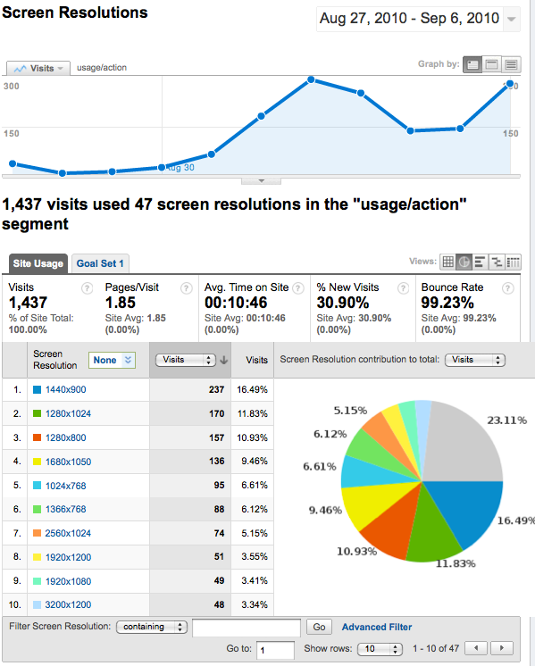
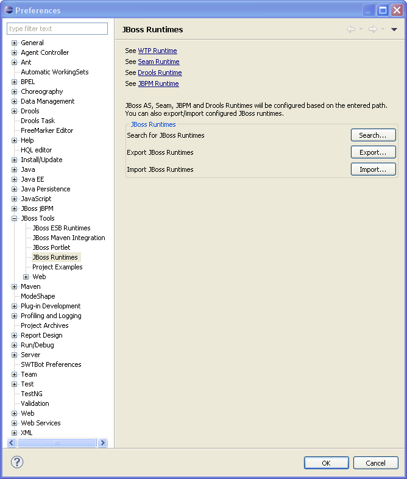

General |
|
| Usage Reporting |
We've added a usage plugin that will allow us to get anonymous usage statistics for JBoss Tools usage. More details about how it works can be found here. The following screenshot shows what details we get for screen resolutions after a few days of nightly build usage.  |
|
| |
| Runtime detection | We have added a "Search and install runtimes" feature to JBoss Tools similar to what previously only were available from JBoss Developer Studio installer. The feature is available under JBoss Tools Preferences and allows you add any time to scan for additional runtimes and servers instead of configuring each individual runtime manually. The "Search" action recognizes JBoss AS server, JBoss EAP/EPP/SOA, Seam, a standalone Seam, JBPM and Drools runtime. There is a filter to export JBoss Runtime preferences that can be used within the standard Eclipse Export wizard. The standard Eclipse Export wizard doesn't export any JBPM and WTP server configurations. The Export/Import action within the Runtime preference page will export/import those configurations too.  |